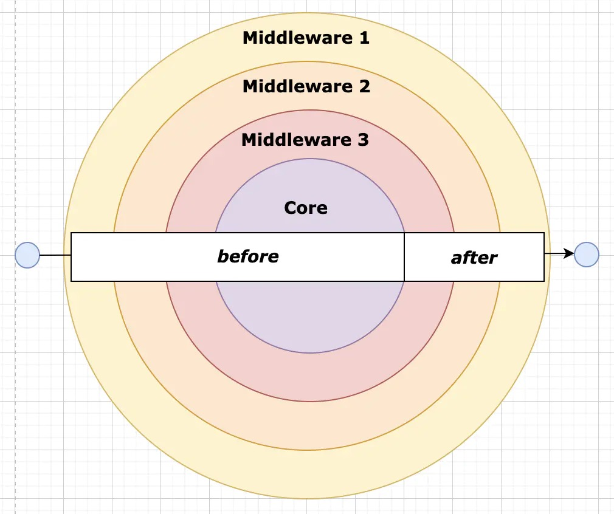
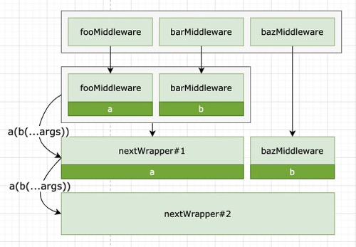
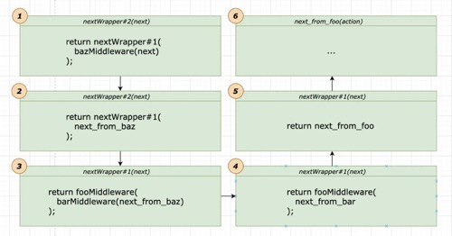
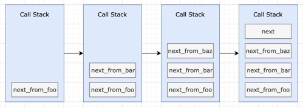
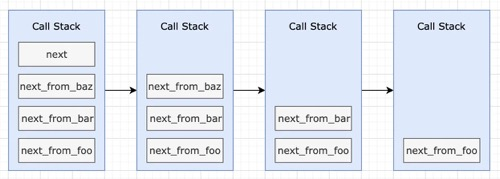
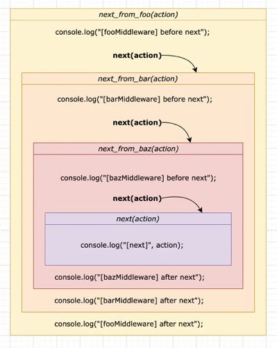
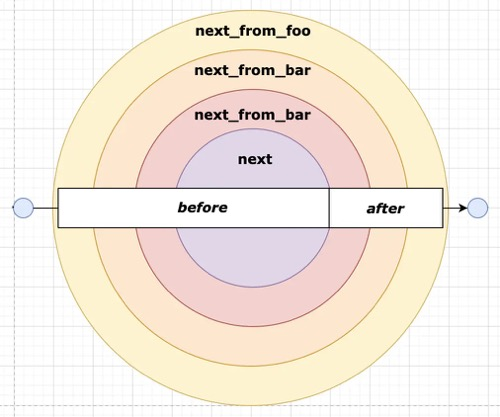

本文来由，希望可以剖析中间件的组合原理，从而帮助大家更加理解洋葱模型。

话不多说，正文如下。
这一段代码来源于 redux 里导出的 compose 函数。我做了一些修改。主要是给匿名函数添加了名称，比如 reducer 和 nextWrapper，主要原因是匿名函数（anonymous）不便于调试。所以 《You-Dont-Know-JS》 的作者 Kyle Simpson 大叔就对箭头函数持保留意见，认为不该乱用，不过跑题了，扯回。
先贴代码如下。
1 | function compose(...funcs) { |
接下来全文将基于此函数剖析。
接下来将提供几个简单 redux 中间件，同样，我避免了箭头函数的使用，理由同上。代码如下：
1 | function next(action) { |
此时如果将以上 foo bar baz 三个中间件组合运行如下：
1 | const chain = compose(fooMiddleware, barMiddleware, bazMiddleware); |
以上将会在控制台输出什么？
大家可以思考一下。
…
熟悉中间件运行顺序的同学可能很快得出答案：
1 | [bazMiddleware] trigger |
写不出正确答案的同学也无须灰心。这篇文章的目的，正是帮助大家更好理解这一套机制原理。
这种洋葱模型，也即是中间件的能力之强大众所周知，现在在 Web 社区发挥极大作用的 Redux、Express、Koa，开发者利用其中的洋葱模型，构建无数强大又有趣的 Web 应用和 Node 应用。更不用提基于这三个衍生出来的 Dva、Egg 等。 所以其实需要理解的是这套实现机制原理，如果光是记住中间件执行顺序，未免太过无趣了，现在让我们逐层逐层解构以上代码来探索洋葱模型吧。
到这里，正文正式开始！
以上代码的灵魂之处在于 Array.prototype.reduce ()，不了解此函数的同学强烈建议去 MDN 遛跶一圈 MDN | Array.prototype.reduce()。
reduce 函数是函数式编程的一个重要概念，可用于实现函数组合（compose）
# 组合中间件机制
1 | const chain = compose(fooMiddleware, barMiddleware, bazMiddleware); |
以上 compose 传入了 fooMiddleware、barMiddleware、bazMiddleware 三个中间件进行组合，内部执行步骤可以分解为以下两步。
- 第一步输入参数：a -> fooMiddleware，b -> barMiddleware
执行 reduce 第一次组合，得到返回输出： function nextWrapper#1(...args) { return fooMiddleware(barMiddleware(...args)) }
- 第二步输入参数：a -> function nextWrapper#1 (…args) { return fooMiddleware (barMiddleware (…args)) }，b -> bazMiddleware
执行 reduce 第二次组合，得到返回输出： function nextWrapper#2(...args) { return nextWrapper#1(bazMiddleware(...args)) } 。
所以 chain 就等于最终返回出来的 nextWrapper。
（这里用了 #1，#2 用来指代不同组合的 nextWrapper，实际上并没有这样的语法，须知）

# 应用中间件机制
然而此时请留意，所有中间件并没有执行，到目前为止最终通过高阶函数 nextWrapper 返回了出来而已。
因为直到以下这一句，传入 next 函数作为参数，才开始真正的触发了 nextWrapper，开始迭代执行所有组合过的中间件。
1 | const nextChain = chain(next); |
我们在上面得知了 chain 最终是形如 (…args) => fooMiddleware (barMiddleware (bazMiddleware (…args))) 的函数。因此当传入 next 函数时，内部执行步骤可以分为下述几步：
-
第一步，执行 chain 函数（也即是 nextWrapper#2），从 compose 的函数组合从内至外，next 参数首先交由 bazMiddleware 函数执行，打印日志后，返回了函数 next_from_baz。
-
第二步，next_from_baz 立即传入 nextWrapper#1，返回了 fooMiddleware (barMiddleware (…args))。 因此，barMiddleware 函数接收的期望 next 参数，其实并不是我们一开始的 next 函数了，而是 bazMiddleware 函数执行后返回的 next_from_baz。barMiddleware 收到 next 参数开始执行，打印日志后，返回了 next_from_bar 函数。
-
第三步，同理，fooMiddleware 函数接收的期望 next 参数是 barMiddleware 函数执行后返回的 next_from_bar。fooMiddleware 收到 next 参数开始执行，打印日志并返回了 next_from_foo 函数。
所以此时我们此时可知，运行完 chain 函数后，实际上 nextChain 函数就是 next_from_foo 函数。
再用示意图详细描述即为：

此时经过以上步骤，控制台输出了下述日志：
1 | [bazMiddleware] trigger |
这里的 next_from_baz，next_from_bar，next_from_foo 其实就是一层层的对传入的参数函数 next 包裹。官方说法称之为 Monkeypatching。
我们很清晰的知道，next_from_foo 包裹了 next_from_bar，next_from_bar 又包裹了 next_from_baz，next_from_baz 则包裹了 next。
如果直接写 Monkeypatching 如下
1 | const prevNext = next; |
但这样如果需要 patch 很多功能，我们需要将上述代码重复许多遍。的确不是很 DRY。
Monkeypatching 本质上是一种 hack。“将任意的方法替换成你想要的”。
关于 Monkeypatching 和 redux 中间件的介绍，十分推荐阅读官网文档 Redux Docs | Middleware。
到这里我想出个考题，如下：
1 | function add5(x) { |
请问，chain (1) 输出值？
执行顺序为 sub3 -> div2 -> add5。 (1 - 3) / 2 + 5 = 4。答案是 4。
那么再问：
1 | const chain = [add5, div2, sub3].reduceRight((a, b) => (...args) => b(a(...args))); |
此时 chain (1) 输出值？还是 4。
再看如下代码：
1 | const chain = [add5, div2, sub3].reverse().reduce((a, b) => (...args) => b(a(...args))); |
此时 chain (1) 输出值？仍然是 4。
如果你对上述示例都能很清晰的运算出答案，那么你应该对上文中 chain (next) 的理解 ok，那么请继续往下看。
# 洋葱模型机制
1 | nextChain("{data}"); |
终于重头戏来了，nextChain 函数来之不易，但毫无疑问，它的能力是十分强大的。（你看，其实在 redux 中，这个 nextChain 函数其实就是 redux 中的 dispatch 函数。）
文章截止目前为止，我们得知了 nextChain 函数即为 next_from_foo 函数。
因此下述的执行顺序我将用函数堆栈图给大家示意。

依次执行，每当执行到 next 函数时，新的 next 函数入栈，循环往复，直到 next_from_baz 为止。函数入栈的过程，就相当于进行完了洋葱模型从外到里的进入过程。
控制台输出日志：
1 | [fooMiddleware] before next |
函数入栈直到最终的 next 函数，我们知道，next 函数并没有任何函数了，也就是说到达了终点。
接下来就是逐层出栈。示意图如下

控制台输出日志：
1 | [next] {data} |
函数出栈的过程，就相当于洋葱模型从里到外的出去过程。
上述是函数堆栈的执行顺序。而下述示意图是我整理后帮助大家理解的线性执行顺序。每当执行到 next (action) 的时候函数入栈，原 next 函数暂时停止执行，执行新的 next 函数，正如下图弯曲箭头所指。

上图，代码从上至下运行，实际上就是调用栈的一个程序控制流程。所以理论上无论有多少个函数嵌套，都可以等同理解。
我们修改一开始的洋葱模型，示例如下：

# 小结
redux 的中间件也就是比上述示例的中间件多了一层高阶函数用以获取框架内部的 store。
1 | const reduxMiddleware = store => next => action => { |
而 koa 的中间件多了 ctx 上下文参数，和支持异步。
1 | app.use(async (ctx, next) => { |
你能想到大致如何实现了么？是不是有点拨开云雾见太阳的感觉了？
如果有，本文发挥了它的作用和价值，笔者将会不甚荣幸。如果没有，那笔者的表达能力还是有待加强。
原文地址 juejin.im